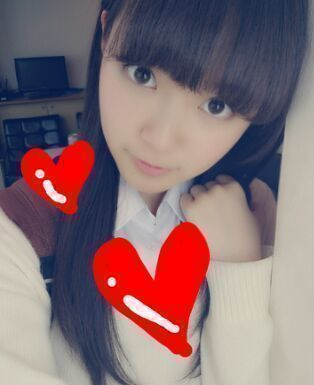
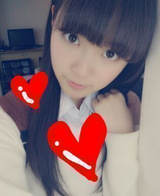

| 2013/05 20 Mon | ひめたん(*>ω<*)そ の298 |
んっぱー(・∀・)
AKB新聞で中元日芽香演じる北嶋文目を...
ん？北嶋文目演じる中元日芽香を？
ま、まーいーや。とにかーく！
AKB新聞で誉めていただきましたー♪
わーいわーいありがとうございますー
みなさんもよかったら読んでみてねー
さあーそんなわけで
おとといは新制服を始めて着ました！
そんで写真撮ってきましたー
ちなみに1stの個人PV撮ったのと
同じスタジオでしたー
ちょっと思い出に浸りましたー(〃ω〃)
なんかー
またひとつ収穫やなーって感じです
ひめたはカメラの前に立つと
なんだか力んじゃうらしいねん
なんで もう少し力を抜いてみる
ってことを学んだ。アイドル2年目の春。
6thの生写真はちょっといい感じかもよー？
って期待させておきます(ω)
べ、べつに裏切るつもりなんて...ごほっ
えっと、さっすーがー博識！
みなさーんいろいろ教えてくれてありがとうっ
みなさんのコメントを受けて
とりあえずあたしは本を読むことを
習慣にすることにしましたと書いておきます。
ほら。本当に本読んでるかどうかは
みなさんが今後のブログとか見ながら
確かめるんでしょ？ほれほれー
ちなみに
最近ひめたが覚えた難しい言葉
シンパシー。
...えっと。えっとえっとえっと。写め！

AKB新聞で中元日芽香演じる北嶋文目を...
ん？北嶋文目演じる中元日芽香を？
ま、まーいーや。とにかーく！
AKB新聞で誉めていただきましたー♪
わーいわーいありがとうございますー
みなさんもよかったら読んでみてねー
さあーそんなわけで
おとといは新制服を始めて着ました！
そんで写真撮ってきましたー
ちなみに1stの個人PV撮ったのと
同じスタジオでしたー
ちょっと思い出に浸りましたー(〃ω〃)
なんかー
またひとつ収穫やなーって感じです
ひめたはカメラの前に立つと
なんだか力んじゃうらしいねん
なんで もう少し力を抜いてみる
ってことを学んだ。アイドル2年目の春。
6thの生写真はちょっといい感じかもよー？
って期待させておきます(ω)
べ、べつに裏切るつもりなんて...ごほっ
えっと、さっすーがー博識！
みなさーんいろいろ教えてくれてありがとうっ
みなさんのコメントを受けて
とりあえずあたしは本を読むことを
習慣にすることにしましたと書いておきます。
ほら。本当に本読んでるかどうかは
みなさんが今後のブログとか見ながら
確かめるんでしょ？ほれほれー
ちなみに
最近ひめたが覚えた難しい言葉
シンパシー。
...えっと。えっとえっとえっと。写め！


 君の名は希望の個人PVみんなの
君の名は希望の個人PVみんなの
みたかなー？誰のがお気に入りですか？
まりっかまりっかまりっかりっか♪
初対面の印象が怖いって言われるんだけど
どうしたらいい？
第一印象て大事だよねー
まあギャップもまたその人の魅力だったり
するわけではあるけどもー。
はじめましてのときは笑顔だけ忘れなければ
おっけーだとあたしは思うんだがどうかな。
髪がつんつんでも笑顔なら
きっと怖くない！はず。
ひめたんは焼肉好きですか？
好きか嫌いかと言われたら好きよー
でも全然行ってない。
去年の遠足でBBQしたのがいっちゃん最近の
焼き肉の思い出って気さえする。誰かー
ひめたんって言われてるみたいだけど
ひめちゃんって呼んでいい？^_^
いいよー♪
最近一部のメンバーからは
めーちゃん、めーたんって呼ばれるよ(〃ω〃)
自分が、ひめたんの分からない問題を
解きます。どんな問題ですか?
ちょっと、
今からここに全部書き出すので
待っててください。逃げちゃだめ。め！
ひめたんはアイドルだなって
感じるときはいつ？
そりゃーもうブログなんて
アイドルやってんなーて感じだけども
ほかはーそうだな。
平日、学校終わってから
お仕事やレッスン直行！なんてときも
ああーアイドルやんなーって思う( ^ω^ )
ひめたんのアイドルらしからぬ一面などが
あれば教えて下さい！
そんな一面はありませーん∩^ω^∩
ごみ箱行くの面倒だから遠くから投げてみたり
お部屋片付けるのが苦手だったりしても
正真正銘アイドルですーてへぺろりーん♪
昨日は撮影でした！
情報解禁はよー
とりあえず、夏らしくて爽やかな曲ですー♪
完成をお楽しみにっ
ではねーっ
(＊´・ω・＊)
情報解禁はよー
とりあえず、夏らしくて爽やかな曲ですー♪
完成をお楽しみにっ
ではねーっ
(＊´・ω・＊)
コメント(194)
2013/05/20 07:30